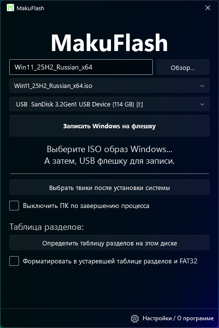
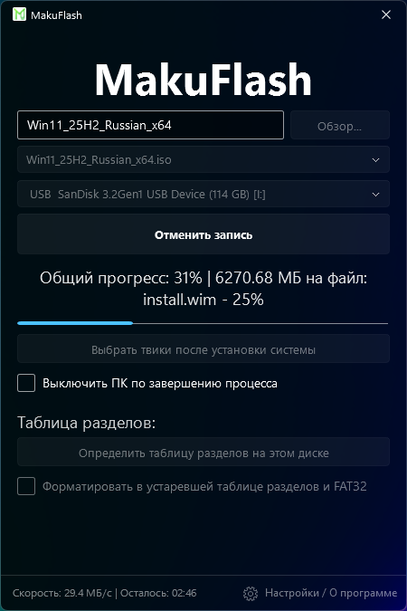
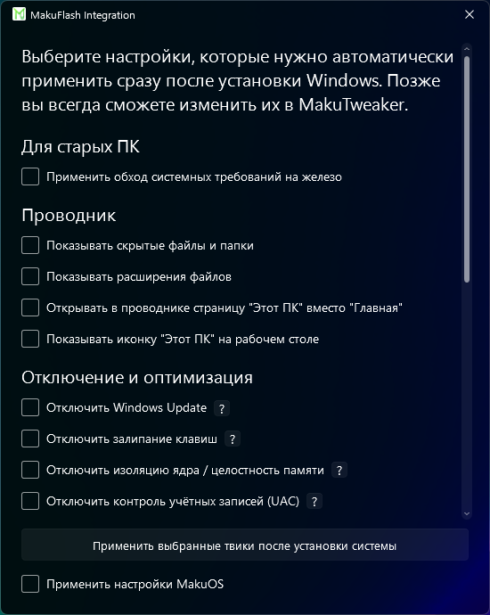
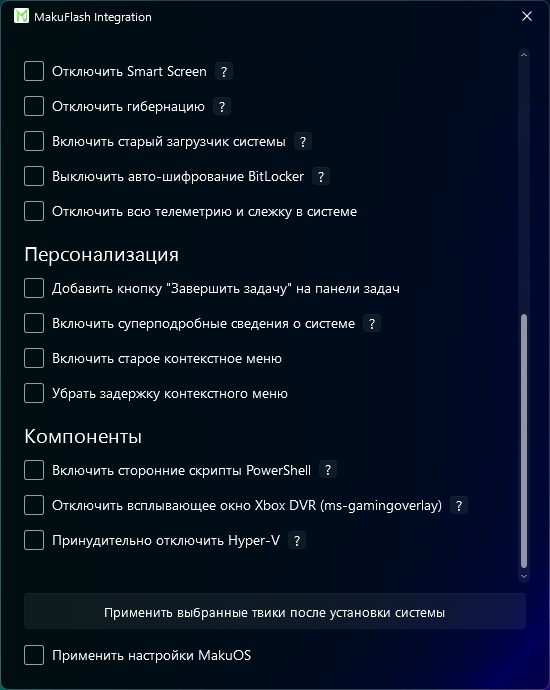

Adderly.Top
Adderly.Top
Скачать MakuFlash
Красивое и дружелюбное переосмысление программы для записи Windows на флешку.
Благодаря технологии двойной буферизации, программа записывает ISO образы до 40% быстрее своих аналогов.
Эксклюзивно в MakuFlash присутствует функция интеграции твиков в будущую систему: от обхода проверок на системные требования железа до полного отключения Центра обновления Windows и изоляции ядра.
Благодаря автоматическому определению таблицы разделов вы больше никогда не перепутаете, какой именно режим необходим для установки системы на ваш ПК.
Современный дизайн, отсутствие лишних функций и перевод на 27 языков открывают возможность переустановить Windows красиво и максимально просто для каждого.



